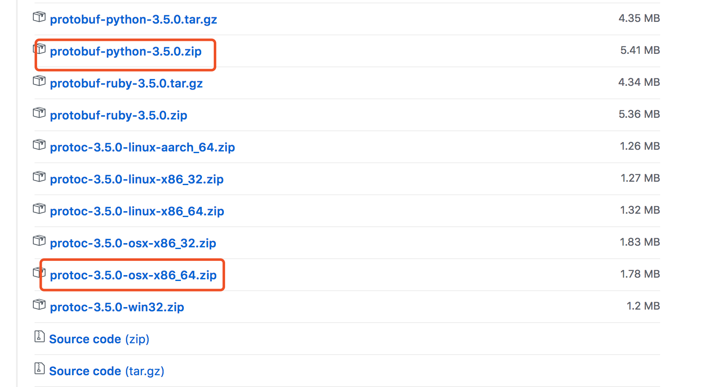

<!DOCTYPE html>
<html lang="zh-CN">
<head>
  <meta charset="UTF-8">
<meta name="viewport" content="width=device-width, initial-scale=1, maximum-scale=2">
<meta name="theme-color" content="#222">
<meta name="generator" content="Hexo 4.2.0">
  <link rel="apple-touch-icon" sizes="180x180" href="/images/apple-touch-icon-next.png">
  <link rel="icon" type="image/png" sizes="32x32" href="/images/favicon-32x32-next.png">
  <link rel="icon" type="image/png" sizes="16x16" href="/images/favicon-16x16-next.png">
  <link rel="mask-icon" href="/images/logo.svg" color="#222">
  <meta name="google-site-verification" content="k2gSYFP_NyLNFob-fFnt7fm-I_n1ZYws-WZll7mshg">

<link rel="stylesheet" href="/css/main.css">

<link rel="stylesheet" href="//fonts.googleapis.com/css?family=Lato:300,300italic,400,400italic,700,700italic&display=swap&subset=latin,latin-ext">
<link rel="stylesheet" href="/lib/font-awesome/css/font-awesome.min.css">


<script id="hexo-configurations">
  var NexT = window.NexT || {};
  var CONFIG = {
    hostname: new URL('https://blog.fudenglong.site').hostname,
    root: '/',
    scheme: 'Gemini',
    version: '7.7.0',
    exturl: false,
    sidebar: {"position":"left","display":"post","padding":18,"offset":12,"onmobile":false},
    copycode: {"enable":true,"show_result":true,"style":"mac"},
    back2top: {"enable":true,"sidebar":false,"scrollpercent":true},
    bookmark: {"enable":true,"color":"#222","save":"manual"},
    fancybox: false,
    mediumzoom: false,
    lazyload: false,
    pangu: false,
    comments: {"style":"tabs","active":null,"storage":true,"lazyload":false,"nav":null},
    algolia: {
      appID: '',
      apiKey: '',
      indexName: '',
      hits: {"per_page":10},
      labels: {"input_placeholder":"Search for Posts","hits_empty":"We didn't find any results for the search: ${query}","hits_stats":"${hits} results found in ${time} ms"}
    },
    localsearch: {"enable":true,"trigger":"auto","top_n_per_article":1,"unescape":false,"preload":true},
    path: 'search.xml',
    motion: {"enable":true,"async":false,"transition":{"post_block":"fadeIn","post_header":"slideDownIn","post_body":"slideDownIn","coll_header":"slideLeftIn","sidebar":"slideUpIn"}}
  };
</script>

  <meta property="og:type" content="article">
<meta property="og:title" content="protobuf">
<meta property="og:url" content="https://blog.fudenglong.site/2017/01/29/ptotobuf/index.html">
<meta property="og:site_name" content="I&#39;m Michael">
<meta property="og:locale" content="zh_CN">
<meta property="og:image" content="https://blog.fudenglong.site/2017/01/29/ptotobuf/3.jpeg">
<meta property="og:image" content="https://blog.fudenglong.site/2017/01/29/ptotobuf/1.png">
<meta property="og:image" content="https://blog.fudenglong.site/2017/01/29/ptotobuf/2.png">
<meta property="article:published_time" content="2017-01-29T03:04:34.000Z">
<meta property="article:modified_time" content="2021-05-19T13:58:50.064Z">
<meta property="article:author" content="Michael">
<meta property="article:tag" content="Python">
<meta property="article:tag" content="protobuf">
<meta name="twitter:card" content="summary">
<meta name="twitter:image" content="https://blog.fudenglong.site/2017/01/29/ptotobuf/3.jpeg">

<link rel="canonical" href="https://blog.fudenglong.site/2017/01/29/ptotobuf/">


<script id="page-configurations">
  // https://hexo.io/docs/variables.html
  CONFIG.page = {
    sidebar: "",
    isHome: false,
    isPost: true
  };
</script>

  <title>protobuf | I'm Michael</title>
  


  <noscript>
  <style>
  .use-motion .brand,
  .use-motion .menu-item,
  .sidebar-inner,
  .use-motion .post-block,
  .use-motion .pagination,
  .use-motion .comments,
  .use-motion .post-header,
  .use-motion .post-body,
  .use-motion .collection-header { opacity: initial; }

  .use-motion .site-title,
  .use-motion .site-subtitle {
    opacity: initial;
    top: initial;
  }

  .use-motion .logo-line-before i { left: initial; }
  .use-motion .logo-line-after i { right: initial; }
  </style>
</noscript>

</head>

<body itemscope itemtype="http://schema.org/WebPage">
  <div class="container use-motion">
    <div class="headband"></div>

    <header class="header" itemscope itemtype="http://schema.org/WPHeader">
      <div class="header-inner"><div class="site-brand-container">
  <div class="site-meta">

    <div>
      <a href="/" class="brand" rel="start">
        <span class="logo-line-before"><i></i></span>
        <span class="site-title">I'm Michael</span>
        <span class="logo-line-after"><i></i></span>
      </a>
    </div>
        <p class="site-subtitle">何以解忧，唯有暴富</p>
  </div>

  <div class="site-nav-toggle">
    <div class="toggle" aria-label="切换导航栏">
      <span class="toggle-line toggle-line-first"></span>
      <span class="toggle-line toggle-line-middle"></span>
      <span class="toggle-line toggle-line-last"></span>
    </div>
  </div>
</div>


<nav class="site-nav">
  
  <ul id="menu" class="menu">
        <li class="menu-item menu-item-home">

    <a href="/" rel="section"><i class="fa fa-fw fa-home"></i>首页</a>

  </li>
        <li class="menu-item menu-item-tags">

    <a href="/tags/" rel="section"><i class="fa fa-fw fa-tags"></i>标签<span class="badge">44</span></a>

  </li>
        <li class="menu-item menu-item-categories">

    <a href="/categories/" rel="section"><i class="fa fa-fw fa-th"></i>分类<span class="badge">10</span></a>

  </li>
        <li class="menu-item menu-item-archives">

    <a href="/archives/" rel="section"><i class="fa fa-fw fa-archive"></i>归档<span class="badge">55</span></a>

  </li>
        <li class="menu-item menu-item-commonweal">

    <a href="/404.html" rel="section"><i class="fa fa-fw fa-heartbeat"></i>公益 404</a>

  </li>
      <li class="menu-item menu-item-search">
        <a role="button" class="popup-trigger"><i class="fa fa-search fa-fw"></i>搜索
        </a>
      </li>
  </ul>

</nav>
  <div class="site-search">
    <div class="popup search-popup">
    <div class="search-header">
  <span class="search-icon">
    <i class="fa fa-search"></i>
  </span>
  <div class="search-input-container">
    <input autocomplete="off" autocorrect="off" autocapitalize="none"
           placeholder="搜索..." spellcheck="false"
           type="text" id="search-input">
  </div>
  <span class="popup-btn-close">
    <i class="fa fa-times-circle"></i>
  </span>
</div>
<div id="search-result"></div>

</div>
<div class="search-pop-overlay"></div>

  </div>
</div>
    </header>

    
  <div class="back-to-top">
    <i class="fa fa-arrow-up"></i>
    <span>0%</span>
  </div>
  <a role="button" class="book-mark-link book-mark-link-fixed"></a>

  <a href="https://github.com/gamelife1314" class="github-corner" title="Follow me on GitHub" aria-label="Follow me on GitHub" rel="noopener" target="_blank"><svg width="80" height="80" viewBox="0 0 250 250" aria-hidden="true"><path d="M0,0 L115,115 L130,115 L142,142 L250,250 L250,0 Z"></path><path d="M128.3,109.0 C113.8,99.7 119.0,89.6 119.0,89.6 C122.0,82.7 120.5,78.6 120.5,78.6 C119.2,72.0 123.4,76.3 123.4,76.3 C127.3,80.9 125.5,87.3 125.5,87.3 C122.9,97.6 130.6,101.9 134.4,103.2" fill="currentColor" style="transform-origin: 130px 106px;" class="octo-arm"></path><path d="M115.0,115.0 C114.9,115.1 118.7,116.5 119.8,115.4 L133.7,101.6 C136.9,99.2 139.9,98.4 142.2,98.6 C133.8,88.0 127.5,74.4 143.8,58.0 C148.5,53.4 154.0,51.2 159.7,51.0 C160.3,49.4 163.2,43.6 171.4,40.1 C171.4,40.1 176.1,42.5 178.8,56.2 C183.1,58.6 187.2,61.8 190.9,65.4 C194.5,69.0 197.7,73.2 200.1,77.6 C213.8,80.2 216.3,84.9 216.3,84.9 C212.7,93.1 206.9,96.0 205.4,96.6 C205.1,102.4 203.0,107.8 198.3,112.5 C181.9,128.9 168.3,122.5 157.7,114.1 C157.9,116.9 156.7,120.9 152.7,124.9 L141.0,136.5 C139.8,137.7 141.6,141.9 141.8,141.8 Z" fill="currentColor" class="octo-body"></path></svg></a>


    <main class="main">
      <div class="main-inner">
        <div class="content-wrap">
          

          <div class="content">
            

  <div class="posts-expand">
      
  
  
  <article itemscope itemtype="http://schema.org/Article" class="post-block " lang="zh-CN">
    <link itemprop="mainEntityOfPage" href="https://blog.fudenglong.site/2017/01/29/ptotobuf/">

    <span hidden itemprop="author" itemscope itemtype="http://schema.org/Person">
      <meta itemprop="image" content="/images/avatar.jpeg">
      <meta itemprop="name" content="Michael">
      <meta itemprop="description" content="何以解忧，唯有暴富">
    </span>

    <span hidden itemprop="publisher" itemscope itemtype="http://schema.org/Organization">
      <meta itemprop="name" content="I'm Michael">
    </span>
      <header class="post-header">
        <h1 class="post-title" itemprop="name headline">
          protobuf
        </h1>

        <div class="post-meta">
            <span class="post-meta-item">
              <span class="post-meta-item-icon">
                <i class="fa fa-calendar-o"></i>
              </span>
              <span class="post-meta-item-text">发表于</span>

              <time title="创建时间：2017-01-29 11:04:34" itemprop="dateCreated datePublished" datetime="2017-01-29T11:04:34+08:00">2017-01-29</time>
            </span>
              <span class="post-meta-item">
                <span class="post-meta-item-icon">
                  <i class="fa fa-calendar-check-o"></i>
                </span>
                <span class="post-meta-item-text">更新于</span>
                <time title="修改时间：2021-05-19 21:58:50" itemprop="dateModified" datetime="2021-05-19T21:58:50+08:00">2021-05-19</time>
              </span>
            <span class="post-meta-item">
              <span class="post-meta-item-icon">
                <i class="fa fa-folder-o"></i>
              </span>
              <span class="post-meta-item-text">分类于</span>
                <span itemprop="about" itemscope itemtype="http://schema.org/Thing">
                  <a href="/categories/protobuf/" itemprop="url" rel="index">
                    <span itemprop="name">protobuf</span>
                  </a>
                </span>
            </span>

          
            <span id="/2017/01/29/ptotobuf/" class="post-meta-item leancloud_visitors" data-flag-title="protobuf" title="阅读次数">
              <span class="post-meta-item-icon">
                <i class="fa fa-eye"></i>
              </span>
              <span class="post-meta-item-text">阅读次数：</span>
              <span class="leancloud-visitors-count"></span>
            </span>
  
  <span class="post-meta-item">
    
      <span class="post-meta-item-icon">
        <i class="fa fa-comment-o"></i>
      </span>
      <span class="post-meta-item-text">Valine：</span>
    
    <a title="valine" href="/2017/01/29/ptotobuf/#valine-comments" itemprop="discussionUrl">
      <span class="post-comments-count valine-comment-count" data-xid="/2017/01/29/ptotobuf/" itemprop="commentCount"></span>
    </a>
  </span>
  
  <br>
            <span class="post-meta-item" title="本文字数">
              <span class="post-meta-item-icon">
                <i class="fa fa-file-word-o"></i>
              </span>
                <span class="post-meta-item-text">本文字数：</span>
              <span>12k</span>
            </span>
            <span class="post-meta-item" title="阅读时长">
              <span class="post-meta-item-icon">
                <i class="fa fa-clock-o"></i>
              </span>
                <span class="post-meta-item-text">阅读时长 &asymp;</span>
              <span>11 分钟</span>
            </span>

        </div>
      </header>

    
    
    
    <div class="post-body" itemprop="articleBody">

      
        
<a id="more"></a>
<h3 id="安装"><a href="#安装" class="headerlink" title="安装"></a>安装</h3><blockquote>
<p> Macos 10.13.1， protobuf 3.5，Python3.6</p>
</blockquote>
<h4 id="参考文章"><a href="#参考文章" class="headerlink" title="参考文章"></a>参考文章</h4><ol>
<li><p><a href="https://github.com/google/protobuf" target="_blank" rel="noopener">google/protobuf</a></p>
</li>
<li><p><a href="https://github.com/google/protobuf/tree/master/python" target="_blank" rel="noopener">protobuf for python</a></p>
</li>
</ol>
<h4 id="快速安装"><a href="#快速安装" class="headerlink" title="快速安装"></a>快速安装</h4><ol>
<li><p><a href="https://github.com/google/protobuf/releases" target="_blank" rel="noopener">下载源代码</a></p>
<p> </p>
</li>
<li><p>安装<code>protoc</code></p>
<pre><code> 解压：protoc-3.5.0-osx-x86_64.zip

 将解压出的:protoc-3.5.0-osx-x86_64/bin/protoc至于系统路径中

 输入：protoc --version 检查是否安装成功
</code></pre></li>
<li><p>安装Python扩展，protobuf</p>
<pre><code> 解压：protobuf-python-3.5.0.zip

 进入目录：protobuf-3.5.0/python

 首先更新：setuptools 和 pip， 执行命令：pip3 install -U setuptools pip
 避免出现错误：AttributeError: &#39;_NamespacePath&#39; object has no attribute &#39;sort&#39;
 我的pip和setuptools版本分别是：pip: 10.0.0.dev0，setuptools: 36.7.2

 然后依次执行：

     python3 setup.py build 
     python3 setup.py test 
     python3 setup.py install
</code></pre></li>
<li><p>检查是否安装成功</p>
<pre><code> Python 3.6.3 (v3.6.3:2c5fed86e0, Oct  3 2017, 00:32:08)
 [GCC 4.2.1 (Apple Inc. build 5666) (dot 3)] on darwin
 Type &quot;help&quot;, &quot;copyright&quot;, &quot;credits&quot; or &quot;license&quot; for more information.
 &gt;&gt;&gt; import google.protobuf
 &gt;&gt;&gt;
</code></pre></li>
</ol>
<h3 id="Protobuf-语言指南"><a href="#Protobuf-语言指南" class="headerlink" title="Protobuf 语言指南"></a>Protobuf 语言指南</h3><p>protobuf2 语言指南参考：<a href="http://blog.csdn.net/cchd0001/article/details/50669079" target="_blank" rel="noopener">[翻译] Protobuf 语言指南 （ proto 2 ）</a></p>
<p>官方指南：<a href="https://developers.google.com/protocol-buffers/docs/proto3" target="_blank" rel="noopener">Language Guide (proto3)</a><br>官方指南：<a href="https://developers.google.com/protocol-buffers/docs/proto" target="_blank" rel="noopener">Language Guide (proto2)</a></p>
<h4 id="定义一个消息"><a href="#定义一个消息" class="headerlink" title="定义一个消息"></a>定义一个消息</h4><p>首先来看一个简单的例子，定义一个搜索请求的消息格式，每个消息包含一个请求字符串，你感兴趣的页数和每页的结果数。下面是在.proto 文件中定义的消息。</p>
<figure class="highlight plain"><table><tr><td class="gutter"><pre><span class="line">1</span><br><span class="line">2</span><br><span class="line">3</span><br><span class="line">4</span><br><span class="line">5</span><br><span class="line">6</span><br><span class="line">7</span><br></pre></td><td class="code"><pre><span class="line">syntax &#x3D; &quot;proto3&quot;;</span><br><span class="line"></span><br><span class="line">message SearchRequest &#123;</span><br><span class="line">  string query &#x3D; 1;</span><br><span class="line">  int32 page_number &#x3D; 2;</span><br><span class="line">  int32 result_per_page &#x3D; 3;</span><br><span class="line">&#125;</span><br></pre></td></tr></table></figure>
<blockquote>
<p>第一行声明在使用<code>proto3</code>语法，如果没有显示说明，protocol buffer 会认为你在使用<code>proto2</code>，版本声明必须在文件第一行；<br><code>SearchRequest</code> 定义了三个字段，每个字段有一个name和type；</p>
</blockquote>
<h4 id="字段类型"><a href="#字段类型" class="headerlink" title="字段类型"></a>字段类型</h4><p>在上面的例子中，所有的字段都是标量类型 ： 两个整形（page_number result_per_page）和一个字符串query。 当然你也可以使用其他组合类型，比如枚举或者其他 消息类型。</p>
<h4 id="分配标签"><a href="#分配标签" class="headerlink" title="分配标签"></a>分配标签</h4><p>正如你所看到的，消息中每一个字段都被定义了一个独一无二的数字标签。这个标签是用来在二进制的消息格式中区分字段的，<br>一旦你的消息开始被使用，这些标签就不应该再被修改了。注意<code>1</code>到<code>15</code>的标签在编码的时候仅占用<code>1byte</code>，<code>16-2047</code>占用<br><code>2byte</code>。因此你应该将<code>1-15</code>标签留给经常使用的消息元素。另外为未来可能添加的常用元素预留位子。<br>你能定义的最小的标签是1， 最大是 <code>2^29 - 1</code> ， 另外 19000 到 19999 （<br><code>FieldDescriptor::kFirstReservedNumber through FieldDescriptor::kLastReservedNumber</code><br>也不能用。他们是protobuf 的编译预留标签。另外你也不能使用被 <code>reserved</code>的标签;</p>
<h4 id="字段规则"><a href="#字段规则" class="headerlink" title="字段规则"></a>字段规则</h4><p>消息字段可以是以下所描述的一种：</p>
<ul>
<li><code>singular</code>: 格式正确d的消息可以有0个或者1个这样的字段；</li>
<li><code>repeated</code>: 这个字段可以有任意多个。字段值的顺序被保留。 </li>
</ul>
<p><code>proto3</code>中，默认情况下，标量数字类型的<code>repeated</code>字段使用<code>packet</code>编码；<a href="https://developers.google.com/protocol-buffers/docs/encoding.html#packed" target="_blank" rel="noopener">Protocol Buffer Encoding</a></p>
<h4 id="定义更多的消息类型"><a href="#定义更多的消息类型" class="headerlink" title="定义更多的消息类型"></a>定义更多的消息类型</h4><p>多个消息类型可以在一个<code>.proto</code>文件中定义。当你定义多个相关联的消息的时候就用的上了;<br>比如我要定义一个<code>SearchResponse</code>来回应<code>SearchRequest</code>消息，那么我在同一个文件中作如下声明：</p>
<figure class="highlight plain"><table><tr><td class="gutter"><pre><span class="line">1</span><br><span class="line">2</span><br><span class="line">3</span><br><span class="line">4</span><br><span class="line">5</span><br><span class="line">6</span><br><span class="line">7</span><br><span class="line">8</span><br><span class="line">9</span><br></pre></td><td class="code"><pre><span class="line">message SearchRequest &#123;</span><br><span class="line">  string query &#x3D; 1;</span><br><span class="line">  int32 page_number &#x3D; 2;</span><br><span class="line">  int32 result_per_page &#x3D; 3;</span><br><span class="line">&#125;</span><br><span class="line"></span><br><span class="line">message SearchResponse &#123;</span><br><span class="line"> ...</span><br><span class="line">&#125;</span><br></pre></td></tr></table></figure>
<h4 id="添加注释"><a href="#添加注释" class="headerlink" title="添加注释"></a>添加注释</h4><p>在<code>.proto</code>文件中添加注释，可以使用C//C++分割的<code>//</code>和<code>/* ... */</code>语法，例如：</p>
<figure class="highlight plain"><table><tr><td class="gutter"><pre><span class="line">1</span><br><span class="line">2</span><br><span class="line">3</span><br><span class="line">4</span><br><span class="line">5</span><br><span class="line">6</span><br><span class="line">7</span><br><span class="line">8</span><br></pre></td><td class="code"><pre><span class="line">&#x2F;* SearchRequest represents a search query, with pagination options to</span><br><span class="line"> * indicate which results to include in the response. *&#x2F;</span><br><span class="line"></span><br><span class="line">message SearchRequest &#123;</span><br><span class="line">  string query &#x3D; 1;</span><br><span class="line">  int32 page_number &#x3D; 2;  &#x2F;&#x2F; Which page number do we want?</span><br><span class="line">  int32 result_per_page &#x3D; 3;  &#x2F;&#x2F; Number of results to return per page.</span><br><span class="line">&#125;</span><br></pre></td></tr></table></figure>
<h4 id="保留字段"><a href="#保留字段" class="headerlink" title="保留字段"></a>保留字段</h4><p>你可能在某次更新更新中删了一个字段或者屏蔽了，但是未来的使用者可能重用这个标签去标记他们自己的字段。<br>然后当他们加载旧的消息的时候就会出现很多问题，包括数据冲突，隐藏的bug等等。<br>指定这个字段的标签数字（或者名字，名字可能在序列化为JSON的时候可能冲突）标记为<code>reserved</code>来保证他们不会再次被使用。<br>如果以后的人试用的话<code>protobuf</code>编译器会提示出错。<br><figure class="highlight plain"><table><tr><td class="gutter"><pre><span class="line">1</span><br><span class="line">2</span><br><span class="line">3</span><br><span class="line">4</span><br></pre></td><td class="code"><pre><span class="line">message Foo &#123;</span><br><span class="line">  reserved 2, 15, 9 to 11;</span><br><span class="line">  reserved &quot;foo&quot;, &quot;bar&quot;;</span><br><span class="line">&#125;</span><br></pre></td></tr></table></figure></p>
<h4 id="从-proto文件最终能生成什么？"><a href="#从-proto文件最终能生成什么？" class="headerlink" title="从.proto文件最终能生成什么？"></a>从<code>.proto</code>文件最终能生成什么？</h4><p>对于<code>python</code>而言，Python编译器会根据在<code>.proto</code>文件中描述的<code>message type</code>生成一个静态描述符模块,<br>然后在元类中使用它在运行时创建必要的Python数据访问类。 </p>
<h4 id="标量类型"><a href="#标量类型" class="headerlink" title="标量类型"></a>标量类型</h4><p>一个标量消息字段可以是下列类型中的一个；</p>
<div class="table-container">
<table>
<thead>
<tr>
<th>proto</th>
<th style="text-align:center">python</th>
<th style="text-align:left">描述</th>
</tr>
</thead>
<tbody>
<tr>
<td>double</td>
<td style="text-align:center">float</td>
<td style="text-align:left"></td>
</tr>
<tr>
<td>float</td>
<td style="text-align:center">float</td>
<td style="text-align:left"></td>
</tr>
<tr>
<td>bool</td>
<td style="text-align:center">bool</td>
<td style="text-align:left"></td>
</tr>
<tr>
<td>int32</td>
<td style="text-align:center">int</td>
<td style="text-align:left">变长编码. 编码负数效率低下, 打算使用负数的话可以使用 sint32.</td>
</tr>
<tr>
<td>int64</td>
<td style="text-align:center">int</td>
<td style="text-align:left">变长编码. 编码负数效率低下, 打算使用负数的话可以使用 sint64.</td>
</tr>
<tr>
<td>unit32</td>
<td style="text-align:center">int</td>
<td style="text-align:left">变长编码.</td>
</tr>
<tr>
<td>unit64</td>
<td style="text-align:center">int</td>
<td style="text-align:left">变长编码.</td>
</tr>
<tr>
<td>sint32</td>
<td style="text-align:center">int</td>
<td style="text-align:left">变长编码，数值有符号，负数编码效率低于int32</td>
</tr>
<tr>
<td>sint64</td>
<td style="text-align:center">int</td>
<td style="text-align:left">变长编码，数值有符号，负数编码效率低于int64</td>
</tr>
<tr>
<td>fixed32</td>
<td style="text-align:center">int</td>
<td style="text-align:left">固定4byte， 如果数值经常大于2的28次方的话效率高于uint32.</td>
</tr>
<tr>
<td>fixed64</td>
<td style="text-align:center">int</td>
<td style="text-align:left">固定4byte， 如果数值经常大于2的56次方的话效率高于uint64.</td>
</tr>
<tr>
<td>sfixed32</td>
<td style="text-align:center">int</td>
<td style="text-align:left">固定4byte。</td>
</tr>
<tr>
<td>sfixed64</td>
<td style="text-align:center">int</td>
<td style="text-align:left">固定8byte。</td>
</tr>
<tr>
<td>string</td>
<td style="text-align:center">string</td>
<td style="text-align:left">字符串内容应该是 UTF-8 编码或者7-bit ASCII 文本.</td>
</tr>
<tr>
<td>bytes</td>
<td style="text-align:center">byte</td>
<td style="text-align:left">任意二进制数据</td>
</tr>
</tbody>
</table>
</div>
<h4 id="默认值"><a href="#默认值" class="headerlink" title="默认值"></a>默认值</h4><p>解析消息时，如果编码的消息不包含特定的<code>singular</code>元素，则解析对象中的相应字段将设置为该字段的默认值。这些默认值是特定于类型的:</p>
<ul>
<li><code>string</code>： 空的字符串；</li>
<li><code>bytes</code>：  空的字节；</li>
<li><code>bool</code>：   <code>false</code>；</li>
<li>数字类型：  默认为0；</li>
<li><code>enum</code>    定义的第一个值，而且它必须为0；</li>
</ul>
<h4 id="枚举"><a href="#枚举" class="headerlink" title="枚举"></a>枚举</h4><p>当你定义一个消息的时候，你可能希望它其中的某个字段一定是预先定义好的一组值中的一个。<br>例如说要在<code>SearchRequest</code>中添加<code>corpus</code>字段。它只能是 <code>UNIVERSAL</code>, <code>WEB</code> , <code>IMAGES</code> , <code>LOCAL</code>, <code>NEWS</code> ,<code>PRODUCTS</code>, 或者 <code>VIDEO</code> 。<br>你可以很简单的在你的消息中定义一个枚举并且定义<code>corpus</code>字段为枚举类型，如果这个字段给出了一个不再枚举中的值，那么解析器就会把它当作一个未知的字段。</p>
<p>下面的例子中，我们添加了一个<code>enum</code>字段叫<code>Corpus</code>以及所有已可能的值，以及一个<code>Corpus</code>类型的字段<code>corpus</code>，</p>
<figure class="highlight plain"><table><tr><td class="gutter"><pre><span class="line">1</span><br><span class="line">2</span><br><span class="line">3</span><br><span class="line">4</span><br><span class="line">5</span><br><span class="line">6</span><br><span class="line">7</span><br><span class="line">8</span><br><span class="line">9</span><br><span class="line">10</span><br><span class="line">11</span><br><span class="line">12</span><br><span class="line">13</span><br><span class="line">14</span><br><span class="line">15</span><br></pre></td><td class="code"><pre><span class="line">message SearchRequest &#123;</span><br><span class="line">  string query &#x3D; 1;</span><br><span class="line">  int32 page_number &#x3D; 2;</span><br><span class="line">  int32 result_per_page &#x3D; 3;</span><br><span class="line">  enum Corpus &#123;</span><br><span class="line">    UNIVERSAL &#x3D; 0;</span><br><span class="line">    WEB &#x3D; 1;</span><br><span class="line">    IMAGES &#x3D; 2;</span><br><span class="line">    LOCAL &#x3D; 3;</span><br><span class="line">    NEWS &#x3D; 4;</span><br><span class="line">    PRODUCTS &#x3D; 5;</span><br><span class="line">    VIDEO &#x3D; 6;</span><br><span class="line">  &#125;</span><br><span class="line">  Corpus corpus &#x3D; 4;</span><br><span class="line">&#125;</span><br></pre></td></tr></table></figure>
<p>正如你看到的，<code>Corpus</code>第一个常量值必须为<code>0</code>, 每个常量<strong>必须</strong>包含一个值为0的常量并且为第一个元素，这是因为：</p>
<p>你可以通过将相同的值分配给不同的枚举常量来定义别名。为此，你需要将<code>allow_alias</code>选项设置为<code>true</code>，否则当找到别名时，protocal编译器将生成错误消息。<br><figure class="highlight plain"><table><tr><td class="gutter"><pre><span class="line">1</span><br><span class="line">2</span><br><span class="line">3</span><br><span class="line">4</span><br><span class="line">5</span><br><span class="line">6</span><br><span class="line">7</span><br><span class="line">8</span><br><span class="line">9</span><br><span class="line">10</span><br><span class="line">11</span><br></pre></td><td class="code"><pre><span class="line">enum EnumAllowingAlias &#123;</span><br><span class="line">  option allow_alias &#x3D; true;</span><br><span class="line">  UNKNOWN &#x3D; 0;</span><br><span class="line">  STARTED &#x3D; 1;</span><br><span class="line">  RUNNING &#x3D; 1;</span><br><span class="line">&#125;</span><br><span class="line">enum EnumNotAllowingAlias &#123;</span><br><span class="line">  UNKNOWN &#x3D; 0;</span><br><span class="line">  STARTED &#x3D; 1;</span><br><span class="line">  &#x2F;&#x2F; RUNNING &#x3D; 1;  &#x2F;&#x2F; Uncommenting this line will cause a compile error inside Google and a warning message outside.</span><br><span class="line">&#125;</span><br></pre></td></tr></table></figure></p>
<p>枚举常数必须是一个32为的整数。由于枚举值在通讯的时候使用变长编码，所以负数的效率很低，不推荐使用。<br>你可以在（像上面这样）在一个消息内定义枚举，也可以在消息外定义,这样枚举就在全文件可见了。<br>如果你想要使用在消息内定义的枚举的话，使用语法 <code>MessageType.EnumType</code>。</p>
<p>当你在运行<code>protocol buffer compiler</code>编译一个包含了<code>enum</code>的<code>.proto</code>的文件时，<br>在Python中，会对应生成一个特殊的<code>EnumDescriptor</code>描述其类；用于在运行时创建一系列<br>值为整数的常量。 </p>
<h4 id="使用其他的消息类型"><a href="#使用其他的消息类型" class="headerlink" title="使用其他的消息类型"></a>使用其他的消息类型</h4><p>你可以用其他的消息类型作为字段类型，例如，我正打算在<code>SearchResponse</code>消息中包含<code>Result</code>消息，为此，<br>你可在相同的<code>.proto</code>文件中定义一个<code>Result</code>消息类型，然后在<code>SearchResponse</code>中定义一个<code>Result</code>字段；</p>
<figure class="highlight plain"><table><tr><td class="gutter"><pre><span class="line">1</span><br><span class="line">2</span><br><span class="line">3</span><br><span class="line">4</span><br><span class="line">5</span><br><span class="line">6</span><br><span class="line">7</span><br><span class="line">8</span><br><span class="line">9</span><br></pre></td><td class="code"><pre><span class="line">message SearchResponse &#123;</span><br><span class="line">  repeated Result results &#x3D; 1;</span><br><span class="line">&#125;</span><br><span class="line"></span><br><span class="line">message Result &#123;</span><br><span class="line">  string url &#x3D; 1;</span><br><span class="line">  string title &#x3D; 2;</span><br><span class="line">  repeated string snippets &#x3D; 3;</span><br><span class="line">&#125;</span><br></pre></td></tr></table></figure>
<h4 id="导入定义"><a href="#导入定义" class="headerlink" title="导入定义"></a>导入定义</h4><p>在上面的例子中， <code>Result</code>消息类型是和<code>SearchResponse</code>定义在同一个文件中，<br>如果你想使用的消息类型已经在另一个<code>.proto</code>文件中定义的话怎么办 ？ </p>
<p>只要你导入一个文件就可以使用这个文件内定义的消息。在你的文件头部加上这样的语句来导入其他文件：<br><code>import &quot;myproject/other_protos.proto&quot;;</code> </p>
<p>默认情况下你只能使用直接导入的文件中的定义。  </p>
<p>然而有的时候你需要将一个文件从一个路径移动到另一个路径的时候，<br>与其将所有的引用这个文件的地方都更新到新的路径，不如在原来的路径上留下一个假的文件，<br>使用<code>import public</code>来指向新的路径。<strong><code>import public</code>语句可以将它导入的文件简介传递给导入本文件的文件</strong>。比如 ：</p>
<figure class="highlight plain"><table><tr><td class="gutter"><pre><span class="line">1</span><br><span class="line">2</span><br></pre></td><td class="code"><pre><span class="line">&#x2F;&#x2F; new.proto</span><br><span class="line">&#x2F;&#x2F; All definitions are moved here</span><br></pre></td></tr></table></figure>
<figure class="highlight plain"><table><tr><td class="gutter"><pre><span class="line">1</span><br><span class="line">2</span><br><span class="line">3</span><br><span class="line">4</span><br></pre></td><td class="code"><pre><span class="line">&#x2F;&#x2F; old.proto</span><br><span class="line">&#x2F;&#x2F; This is the proto that all clients are importing.</span><br><span class="line">import public &quot;new.proto&quot;;</span><br><span class="line">import &quot;other.proto&quot;;</span><br></pre></td></tr></table></figure>
<figure class="highlight plain"><table><tr><td class="gutter"><pre><span class="line">1</span><br><span class="line">2</span><br><span class="line">3</span><br></pre></td><td class="code"><pre><span class="line">&#x2F;&#x2F; client.proto</span><br><span class="line">import &quot;old.proto&quot;;</span><br><span class="line">&#x2F;&#x2F; You use definitions from old.proto and new.proto, but not other.</span><br></pre></td></tr></table></figure>
<p>在命令行中试用<code>-I/--proto_path</code>来指定一系列的编译器搜索路径，如果这个参数没有被设置，<br>那么默认在命令执行的路径查找。通常情况下使用<code>-I/--proto_path</code>来指定到你项目的根目录，<br>然后使用完整的路径来导入所需的文件。</p>
<h4 id="嵌套类型"><a href="#嵌套类型" class="headerlink" title="嵌套类型"></a>嵌套类型</h4><p>你可以在一个消息中定义并使用其他类型的消息，如下：<code>Result</code>是在<code>SearchResponse</code>中定义的：</p>
<figure class="highlight plain"><table><tr><td class="gutter"><pre><span class="line">1</span><br><span class="line">2</span><br><span class="line">3</span><br><span class="line">4</span><br><span class="line">5</span><br><span class="line">6</span><br><span class="line">7</span><br><span class="line">8</span><br></pre></td><td class="code"><pre><span class="line">message SearchResponse &#123;</span><br><span class="line">  message Result &#123;</span><br><span class="line">    string url &#x3D; 1;</span><br><span class="line">    string title &#x3D; 2;</span><br><span class="line">    repeated string snippets &#x3D; 3;</span><br><span class="line">  &#125;</span><br><span class="line">  repeated Result results &#x3D; 1;</span><br><span class="line">&#125;</span><br></pre></td></tr></table></figure>
<p>如果你打算在这个消息的副消息之外冲用这个消息，你可以这样引用他，<code>Parent.Type</code>：</p>
<figure class="highlight plain"><table><tr><td class="gutter"><pre><span class="line">1</span><br><span class="line">2</span><br><span class="line">3</span><br></pre></td><td class="code"><pre><span class="line">message SomeOtherMessage &#123;</span><br><span class="line">  SearchResponse.Result result &#x3D; 1;</span><br><span class="line">&#125;</span><br></pre></td></tr></table></figure>
<p>嵌套的级别没有限制：</p>
<figure class="highlight plain"><table><tr><td class="gutter"><pre><span class="line">1</span><br><span class="line">2</span><br><span class="line">3</span><br><span class="line">4</span><br><span class="line">5</span><br><span class="line">6</span><br><span class="line">7</span><br><span class="line">8</span><br><span class="line">9</span><br><span class="line">10</span><br><span class="line">11</span><br><span class="line">12</span><br><span class="line">13</span><br><span class="line">14</span><br></pre></td><td class="code"><pre><span class="line">message Outer &#123;                  &#x2F;&#x2F; Level 0</span><br><span class="line">  message MiddleAA &#123;  &#x2F;&#x2F; Level 1</span><br><span class="line">    message Inner &#123;   &#x2F;&#x2F; Level 2</span><br><span class="line">      int64 ival &#x3D; 1;</span><br><span class="line">      bool  booly &#x3D; 2;</span><br><span class="line">    &#125;</span><br><span class="line">  &#125;</span><br><span class="line">  message MiddleBB &#123;  &#x2F;&#x2F; Level 1</span><br><span class="line">    message Inner &#123;   &#x2F;&#x2F; Level 2</span><br><span class="line">      int32 ival &#x3D; 1;</span><br><span class="line">      bool  booly &#x3D; 2;</span><br><span class="line">    &#125;</span><br><span class="line">  &#125;</span><br><span class="line">&#125;</span><br></pre></td></tr></table></figure>
<h4 id="更新一个消息类型"><a href="#更新一个消息类型" class="headerlink" title="更新一个消息类型"></a>更新一个消息类型</h4><p>如果一个现有的消息不再满足你的所有需求，比如你需要额外的字段，但是你仍希望兼容旧代码生成的消息；<br>不要担心，在不破坏你现有的代码的前提下更新消息是很简单的，但是要遵循以下规则：</p>
<ul>
<li><p>不要改变任何已有的数字标签；</p>
</li>
<li><p>如果你新添加新的字段，任何使用旧代码序列化生成的消息任然可以被新的代码解析；<br>不过你应该记住这些元素的默认值，以便新代码可以正确地与旧代码生成的消息进行交互。<br>同样，新代码创建的消息也可以用旧代码解析：旧的二进制文件在解析时会忽略新的字段；</p>
</li>
<li><p>只要标签号码在更新的消息类型中不再使用，字段可以被删除。您可能需要重新命名该字段，<br>可能会添加前缀“OBSOLETE_”，或者保留标记，以便未来的<code>.proto</code>用户不会意外重复使用该数字。</p>
</li>
<li><p>int32, uint32, int64, uint64, 和 bool这些类型是兼容的 —— 这意味着你可以将一个字段的类型从其中的一种转化为另一种，不会打破向前向后兼容！  </p>
</li>
<li><p>sint32 sint64相互兼容，但是不和其他的数字类型兼容。  </p>
</li>
<li><p>string bytes相互兼容 ，前提是二进制内容是有效的UTF-8 。</p>
</li>
<li><p>嵌入式消息与字节兼容，如果字节包含消息的编码版本</p>
</li>
<li><p>fixed32 兼容 sfixed32,  fixed64 兼容sfixed64.</p>
</li>
<li><p><code>enum</code>和 <code>int32, uint32, int64, and uint64</code>在传输格式中相互兼容（如果值不合适将会被截断），但是在反序列化的时候，接收方可能以不同的方式对待；<br>例如：<code>proto3</code>中无法识别的枚举类型将保留在消息中，但消息反序列化时如何表示是语言相关的。 int域始终保持其值。</p>
</li>
</ul>
<h4 id="未知字段"><a href="#未知字段" class="headerlink" title="未知字段"></a>未知字段</h4><h4 id="Any"><a href="#Any" class="headerlink" title="Any"></a>Any</h4><p>Any消息类型允许你使用消息作为嵌入式类型，而无需在<code>.proto</code>中定义。<br>Any包含一个任意的序列化的消息作为字节，以及一个充当全局唯一标识符并解析为该消息类型的URL。<br>要使用Any类型，您需要import<code>google/protobuf/any.proto</code>。</p>
<figure class="highlight plain"><table><tr><td class="gutter"><pre><span class="line">1</span><br><span class="line">2</span><br><span class="line">3</span><br><span class="line">4</span><br><span class="line">5</span><br><span class="line">6</span><br></pre></td><td class="code"><pre><span class="line">import &quot;google&#x2F;protobuf&#x2F;any.proto&quot;;</span><br><span class="line"></span><br><span class="line">message ErrorStatus &#123;</span><br><span class="line">  string message &#x3D; 1;</span><br><span class="line">  repeated google.protobuf.Any details &#x3D; 2;</span><br><span class="line">&#125;</span><br></pre></td></tr></table></figure>
<h4 id="Oneof"><a href="#Oneof" class="headerlink" title="Oneof"></a>Oneof</h4><p>如果你有一个拥有多个字段的消息，但是同时只会有一个字段存在，你可以强制使用<code>oneof</code>特性以节省内存;</p>
<p>要在你的<code>.proto</code>中定义一个<code>oneof</code>，你需要使用<code>oneof</code>关键字，然后是 <code>oneof name</code>，在这个例子中，是<code>test_oneof</code>:</p>
<figure class="highlight plain"><table><tr><td class="gutter"><pre><span class="line">1</span><br><span class="line">2</span><br><span class="line">3</span><br><span class="line">4</span><br><span class="line">5</span><br><span class="line">6</span><br></pre></td><td class="code"><pre><span class="line">message SampleMessage &#123;</span><br><span class="line">  oneof test_oneof &#123;</span><br><span class="line">    string name &#x3D; 4;</span><br><span class="line">    SubMessage sub_message &#x3D; 9;</span><br><span class="line">  &#125;</span><br><span class="line">&#125;</span><br></pre></td></tr></table></figure>
<p>然后你可以在<code>oneof</code>定义中添加<code>oneof</code>字段，但是你<strong>不能添加<code>repeated</code>字段</strong>；</p>
<p><code>oneof</code> 具有如下特性：</p>
<ul>
<li><p>设置一个oneof字段会自动清理其他的oneof字段。如果你设置了多个oneof字段，只有最后一个有效。</p>
</li>
<li><p>如果解析器发现多个oneof字段被设置了，最后一个读到的算数。</p>
</li>
<li><p><code>oneof</code> 字段不能使<code>repeated</code>类型；</p>
</li>
<li><p>反射API对oneof字段有效。</p>
</li>
</ul>
<h4 id="Packages"><a href="#Packages" class="headerlink" title="Packages"></a>Packages</h4><p>为防止消息命名冲突，你可以在<code>.proto</code>文件中使用<code>package</code>说明符来区分，例如：</p>
<figure class="highlight plain"><table><tr><td class="gutter"><pre><span class="line">1</span><br><span class="line">2</span><br></pre></td><td class="code"><pre><span class="line">package foo.bar;</span><br><span class="line">message Open &#123; ... &#125;</span><br></pre></td></tr></table></figure>
<p>你可以在定义消息类型的字段时使用包说明符：</p>
<figure class="highlight plain"><table><tr><td class="gutter"><pre><span class="line">1</span><br><span class="line">2</span><br><span class="line">3</span><br><span class="line">4</span><br><span class="line">5</span><br></pre></td><td class="code"><pre><span class="line">message Foo &#123;</span><br><span class="line">  ...</span><br><span class="line">  foo.bar.Open open &#x3D; 1;</span><br><span class="line">  ...</span><br><span class="line">&#125;</span><br></pre></td></tr></table></figure>
<p>包名的实现取决于具体的编程语言：</p>
<blockquote>
<p>在 Python中,由于Python的模块是由它的文件系统来管理的，所以包名被忽略。</p>
</blockquote>
<h4 id="定义服务"><a href="#定义服务" class="headerlink" title="定义服务"></a>定义服务</h4><p>如果打算将你的消息配合一个<code>RPC(Remote Procedure Call 远程调用</code>系统联合使用的话，<br>你可以在.proto文件中定义一个<code>RPC</code>服务接口然后<code>protobuf</code>就会给你生成一个服务接口和其他必要代码。<br>比如你打算定义一个远程调用，接收<code>SearchRequest</code>返回<code>SearchResponse</code>， 那么你在你的文件中这样定义 ：</p>
<figure class="highlight plain"><table><tr><td class="gutter"><pre><span class="line">1</span><br><span class="line">2</span><br><span class="line">3</span><br></pre></td><td class="code"><pre><span class="line">service SearchService &#123;</span><br><span class="line">  rpc Search (SearchRequest) returns (SearchResponse);</span><br><span class="line">&#125;</span><br></pre></td></tr></table></figure>
<h3 id="Protobuf-Example"><a href="#Protobuf-Example" class="headerlink" title="Protobuf Example"></a>Protobuf Example</h3><h4 id="创建-proto文件，声明消息格式"><a href="#创建-proto文件，声明消息格式" class="headerlink" title="创建.proto文件，声明消息格式"></a>创建<code>.proto</code>文件，声明消息格式</h4><p>命名为：<code>addressbook.proto</code></p>
<figure class="highlight plain"><table><tr><td class="gutter"><pre><span class="line">1</span><br><span class="line">2</span><br><span class="line">3</span><br><span class="line">4</span><br><span class="line">5</span><br><span class="line">6</span><br><span class="line">7</span><br><span class="line">8</span><br><span class="line">9</span><br><span class="line">10</span><br><span class="line">11</span><br><span class="line">12</span><br><span class="line">13</span><br><span class="line">14</span><br><span class="line">15</span><br><span class="line">16</span><br><span class="line">17</span><br><span class="line">18</span><br><span class="line">19</span><br><span class="line">20</span><br><span class="line">21</span><br><span class="line">22</span><br><span class="line">23</span><br><span class="line">24</span><br><span class="line">25</span><br><span class="line">26</span><br><span class="line">27</span><br><span class="line">28</span><br><span class="line">29</span><br><span class="line">30</span><br><span class="line">31</span><br><span class="line">32</span><br><span class="line">33</span><br><span class="line">34</span><br><span class="line">35</span><br></pre></td><td class="code"><pre><span class="line">syntax &#x3D; &quot;proto3&quot;;</span><br><span class="line"></span><br><span class="line">package tutorial;</span><br><span class="line"></span><br><span class="line">message Person &#123;</span><br><span class="line"></span><br><span class="line">    string name &#x3D; 1;</span><br><span class="line"></span><br><span class="line">    int32 id &#x3D; 2;</span><br><span class="line"></span><br><span class="line">    string email &#x3D; 3;</span><br><span class="line"></span><br><span class="line">    enum PhoneType &#123;</span><br><span class="line"></span><br><span class="line">        HOME &#x3D; 0;</span><br><span class="line"></span><br><span class="line">        MOBILE &#x3D; 1;</span><br><span class="line"></span><br><span class="line">        WORK &#x3D; 2;</span><br><span class="line">    &#125;</span><br><span class="line"></span><br><span class="line">    message PhoneNumber &#123;</span><br><span class="line"></span><br><span class="line">        string number &#x3D; 1;</span><br><span class="line"></span><br><span class="line">        PhoneType type &#x3D; 2;</span><br><span class="line">    &#125;</span><br><span class="line"></span><br><span class="line">    repeated PhoneNumber phones &#x3D; 4;</span><br><span class="line">&#125;</span><br><span class="line"></span><br><span class="line">message AddressBook &#123;</span><br><span class="line"></span><br><span class="line">	repeated Person people &#x3D; 1;</span><br><span class="line">&#125;</span><br></pre></td></tr></table></figure>
<h4 id="编译-proto文件，创建Python类"><a href="#编译-proto文件，创建Python类" class="headerlink" title="编译.proto文件，创建Python类"></a>编译<code>.proto</code>文件，创建Python类</h4><blockquote>
<p>protoc -I=./ —python_out=./ ./addressbook.proto</p>
</blockquote>
<h4 id="测试使用"><a href="#测试使用" class="headerlink" title="测试使用"></a>测试使用</h4><figure class="highlight python"><table><tr><td class="gutter"><pre><span class="line">1</span><br><span class="line">2</span><br><span class="line">3</span><br><span class="line">4</span><br><span class="line">5</span><br><span class="line">6</span><br><span class="line">7</span><br><span class="line">8</span><br><span class="line">9</span><br><span class="line">10</span><br><span class="line">11</span><br><span class="line">12</span><br><span class="line">13</span><br><span class="line">14</span><br><span class="line">15</span><br><span class="line">16</span><br><span class="line">17</span><br><span class="line">18</span><br><span class="line">19</span><br><span class="line">20</span><br><span class="line">21</span><br><span class="line">22</span><br><span class="line">23</span><br><span class="line">24</span><br><span class="line">25</span><br></pre></td><td class="code"><pre><span class="line"><span class="keyword">from</span> google.protobuf <span class="keyword">import</span> json_format</span><br><span class="line"></span><br><span class="line"><span class="keyword">import</span> addressbook_pb2</span><br><span class="line"></span><br><span class="line">person = addressbook_pb2.Person()</span><br><span class="line"></span><br><span class="line">person.id = <span class="number">1</span></span><br><span class="line">person.name = <span class="string">"付登龙"</span></span><br><span class="line">person.email = <span class="string">"1185694@qq.com"</span></span><br><span class="line">person.phones.add(number=<span class="string">"13386851858"</span>, type=addressbook_pb2.Person.MOBILE)</span><br><span class="line"></span><br><span class="line"><span class="comment"># 序列化成二进制</span></span><br><span class="line">print(person.SerializeToString())</span><br><span class="line"></span><br><span class="line"><span class="comment"># 从二进制反序列化</span></span><br><span class="line">person1 = addressbook_pb2.Person()</span><br><span class="line">person1.ParseFromString(person.SerializeToString())</span><br><span class="line"></span><br><span class="line"><span class="comment"># 转换成字典</span></span><br><span class="line">print(json_format.MessageToDict(person1, <span class="literal">True</span>))</span><br><span class="line"></span><br><span class="line"><span class="comment"># 从json数据反序列化</span></span><br><span class="line">person2 = addressbook_pb2.Person()</span><br><span class="line">json_format.Parse(json_format.MessageToJson(person1, <span class="literal">True</span>), person2)</span><br><span class="line">print(person2)</span><br></pre></td></tr></table></figure>
<p>输出结果如下：<br><figure class="highlight plain"><table><tr><td class="gutter"><pre><span class="line">1</span><br><span class="line">2</span><br><span class="line">3</span><br><span class="line">4</span><br><span class="line">5</span><br><span class="line">6</span><br><span class="line">7</span><br><span class="line">8</span><br><span class="line">9</span><br></pre></td><td class="code"><pre><span class="line">b&#39;\n\t\xe4\xbb\x98\xe7\x99\xbb\xe9\xbe\x99\x10\x01\x1a\x0e1185694@qq.com&quot;\x0f\n\x0b13386851858\x10\x01&#39;</span><br><span class="line">&#123;&#39;name&#39;: &#39;付登龙&#39;, &#39;id&#39;: 1, &#39;email&#39;: &#39;1185694@qq.com&#39;, &#39;phones&#39;: [&#123;&#39;number&#39;: &#39;13386851858&#39;, &#39;type&#39;: &#39;MOBILE&#39;&#125;]&#125;</span><br><span class="line">name: &quot;\344\273\230\347\231\273\351\276\231&quot;</span><br><span class="line">id: 1</span><br><span class="line">email: &quot;1185694@qq.com&quot;</span><br><span class="line">phones &#123;</span><br><span class="line">  number: &quot;13386851858&quot;</span><br><span class="line">  type: MOBILE</span><br><span class="line">&#125;</span><br></pre></td></tr></table></figure></p>
<p>参考以下文章：</p>
<ol>
<li><a href="https://developers.google.com/protocol-buffers/docs/pythontutorial" target="_blank" rel="noopener">Protocol Buffer Basics: Python</a></li>
<li><a href="https://developers.google.com/protocol-buffers/docs/reference/python/" target="_blank" rel="noopener">Protocol Api for Python</a></li>
</ol>
<h3 id="gRPC"><a href="#gRPC" class="headerlink" title="gRPC"></a>gRPC</h3><p>参考文章如下：</p>
<ol>
<li><p><a href="https://grpc.io/docs/quickstart/python.html" target="_blank" rel="noopener">https://grpc.io/docs/quickstart/python.html</a></p>
</li>
<li><p><a href="https://grpc.io/docs/" target="_blank" rel="noopener">https://grpc.io/docs/</a></p>
</li>
<li><p><a href="http://doc.oschina.net/grpc?t=60138" target="_blank" rel="noopener">gRPC 官方文档中文版</a></p>
</li>
</ol>
<h4 id="什么是gRPC？"><a href="#什么是gRPC？" class="headerlink" title="什么是gRPC？"></a>什么是gRPC？</h4><p>在 gRPC 里客户端应用可以像调用本地对象一样直接调用另一台不同的机器上服务端应用的方法，使得您能够更容易地创建分布式应用和服务。  与许多 RPC 系统类似，</p>
<p>gRPC 也是基于以下理念：定义一个服务，指定其能够被远程调用的方法（包含参数和返回类型）。<br>在服务端实现这个接口，并运行一个 gRPC 服务器来处理客户端调用。在客户端拥有一个存根能够像服务端一样的方法。</p>
<p></p>
<p>gRPC 客户端和服务端可以在多种环境中运行和交互，从 google 内部的服务器到你自己的笔记本，并且可以用任何 gRPC 支持的语言来编写。<br>所以，你可以很容易地用 Java 创建一个 gRPC 服务端，用 Go、Python、Ruby 来创建客户端。此外，Google 最新 API 将有 gRPC 版本的接口，使你很容易地将 Google 的功能集成到你的应用里。</p>
<h4 id="Python3中使用gRPC服务"><a href="#Python3中使用gRPC服务" class="headerlink" title="Python3中使用gRPC服务"></a>Python3中使用gRPC服务</h4><h5 id="环境及要求"><a href="#环境及要求" class="headerlink" title="环境及要求"></a>环境及要求</h5><blockquote>
<p>gRPC需要Python2.7或者3.4以上；</p>
</blockquote>
<ol>
<li><p>升级<code>pip</code>，确保其为最新版：<code>pip3 install -U pip</code></p>
</li>
<li><p>安装<code>gRPC</code>，<code>pip3 install grpcio</code></p>
</li>
<li><p>安装<code>gRPC</code>，<code>pip3 install grpcio-tools</code></p>
</li>
</ol>
<h5 id="定义Service"><a href="#定义Service" class="headerlink" title="定义Service"></a>定义Service</h5><blockquote>
<p>helloworld.proto</p>
</blockquote>
<figure class="highlight plain"><table><tr><td class="gutter"><pre><span class="line">1</span><br><span class="line">2</span><br><span class="line">3</span><br><span class="line">4</span><br><span class="line">5</span><br><span class="line">6</span><br><span class="line">7</span><br><span class="line">8</span><br><span class="line">9</span><br><span class="line">10</span><br><span class="line">11</span><br><span class="line">12</span><br><span class="line">13</span><br><span class="line">14</span><br><span class="line">15</span><br><span class="line">16</span><br><span class="line">17</span><br><span class="line">18</span><br><span class="line">19</span><br><span class="line">20</span><br><span class="line">21</span><br><span class="line">22</span><br></pre></td><td class="code"><pre><span class="line">syntax &#x3D; &quot;proto3&quot;;</span><br><span class="line"></span><br><span class="line">package helloworld;</span><br><span class="line"></span><br><span class="line">&#x2F;&#x2F; The request message containing the user&#39;s name.</span><br><span class="line">message HelloRequest &#123;</span><br><span class="line">  string name &#x3D; 1;</span><br><span class="line">&#125;</span><br><span class="line"></span><br><span class="line">&#x2F;&#x2F; The response message containing the greetings</span><br><span class="line">message HelloReply &#123;</span><br><span class="line">  string message &#x3D; 1;</span><br><span class="line">&#125;</span><br><span class="line"></span><br><span class="line">&#x2F;&#x2F; The greeting service definition.</span><br><span class="line">service Greeter &#123;</span><br><span class="line">  &#x2F;&#x2F; Sends a greeting</span><br><span class="line">  rpc SayHello (HelloRequest) returns (HelloReply) &#123;&#125;</span><br><span class="line"></span><br><span class="line">  &#x2F;&#x2F; send another greeting</span><br><span class="line">  rpc SayHelloAgain(HelloRequest) returns (HelloReply) &#123;&#125;</span><br><span class="line">&#125;</span><br></pre></td></tr></table></figure>
<h5 id="生成gRPC代码以及消息类型"><a href="#生成gRPC代码以及消息类型" class="headerlink" title="生成gRPC代码以及消息类型"></a>生成gRPC代码以及消息类型</h5><p>执行命令：<code>python3 -m grpc_tools.protoc -I . --python_out=. --grpc_python_out=. helloworld.proto</code></p>
<p>将生成两个文件：<code>helloworld_pb2.py</code>和<code>helloworld_pb2_grpc.py</code></p>
<h5 id="创建Server"><a href="#创建Server" class="headerlink" title="创建Server"></a>创建Server</h5><figure class="highlight python"><table><tr><td class="gutter"><pre><span class="line">1</span><br><span class="line">2</span><br><span class="line">3</span><br><span class="line">4</span><br><span class="line">5</span><br><span class="line">6</span><br><span class="line">7</span><br><span class="line">8</span><br><span class="line">9</span><br><span class="line">10</span><br><span class="line">11</span><br><span class="line">12</span><br><span class="line">13</span><br><span class="line">14</span><br><span class="line">15</span><br><span class="line">16</span><br><span class="line">17</span><br><span class="line">18</span><br><span class="line">19</span><br><span class="line">20</span><br><span class="line">21</span><br><span class="line">22</span><br><span class="line">23</span><br><span class="line">24</span><br><span class="line">25</span><br><span class="line">26</span><br><span class="line">27</span><br><span class="line">28</span><br><span class="line">29</span><br><span class="line">30</span><br><span class="line">31</span><br><span class="line">32</span><br><span class="line">33</span><br><span class="line">34</span><br><span class="line">35</span><br><span class="line">36</span><br></pre></td><td class="code"><pre><span class="line"><span class="comment"># -*- coding:utf-8 -*-</span></span><br><span class="line"></span><br><span class="line"><span class="keyword">import</span> time</span><br><span class="line"><span class="keyword">from</span> concurrent <span class="keyword">import</span> futures</span><br><span class="line"></span><br><span class="line"><span class="keyword">import</span> grpc</span><br><span class="line"></span><br><span class="line"><span class="keyword">import</span> helloworld_pb2</span><br><span class="line"><span class="keyword">import</span> helloworld_pb2_grpc</span><br><span class="line"></span><br><span class="line"></span><br><span class="line"><span class="class"><span class="keyword">class</span> <span class="title">Greeter</span><span class="params">(helloworld_pb2_grpc.GreeterServicer)</span>:</span></span><br><span class="line"></span><br><span class="line">    <span class="function"><span class="keyword">def</span> <span class="title">SayHello</span><span class="params">(self, request, context)</span>:</span></span><br><span class="line">        <span class="keyword">return</span> helloworld_pb2.HelloReply(message=<span class="string">"hello world, %s"</span> % request.name)</span><br><span class="line"></span><br><span class="line">    <span class="function"><span class="keyword">def</span> <span class="title">SayHelloAgain</span><span class="params">(self, request, context)</span>:</span></span><br><span class="line">        <span class="keyword">return</span> helloworld_pb2.HelloReply(message=<span class="string">"hello world, %s"</span> % request.name)</span><br><span class="line"></span><br><span class="line"></span><br><span class="line"><span class="function"><span class="keyword">def</span> <span class="title">main</span><span class="params">()</span>:</span></span><br><span class="line"></span><br><span class="line">    server = grpc.server(futures.ThreadPoolExecutor(max_workers=<span class="number">10</span>))</span><br><span class="line">    helloworld_pb2_grpc.add_GreeterServicer_to_server(Greeter(), server)</span><br><span class="line">    server.add_insecure_port(<span class="string">"[::]:50051"</span>)</span><br><span class="line">    server.start()</span><br><span class="line"></span><br><span class="line">    <span class="keyword">try</span>:</span><br><span class="line">        <span class="keyword">while</span> <span class="literal">True</span>:</span><br><span class="line">            time.sleep(<span class="number">86400</span>)</span><br><span class="line">    <span class="keyword">except</span> KeyboardInterrupt:</span><br><span class="line">        server.stop(<span class="number">0</span>)</span><br><span class="line"></span><br><span class="line"></span><br><span class="line"><span class="keyword">if</span> __name__ == <span class="string">'__main__'</span>:</span><br><span class="line">    main()</span><br></pre></td></tr></table></figure>
<p>运行server：<code>python3 rpc_server.py</code></p>
<h5 id="创建client"><a href="#创建client" class="headerlink" title="创建client"></a>创建client</h5><figure class="highlight python"><table><tr><td class="gutter"><pre><span class="line">1</span><br><span class="line">2</span><br><span class="line">3</span><br><span class="line">4</span><br><span class="line">5</span><br><span class="line">6</span><br><span class="line">7</span><br><span class="line">8</span><br><span class="line">9</span><br><span class="line">10</span><br><span class="line">11</span><br><span class="line">12</span><br><span class="line">13</span><br><span class="line">14</span><br><span class="line">15</span><br><span class="line">16</span><br><span class="line">17</span><br><span class="line">18</span><br><span class="line">19</span><br></pre></td><td class="code"><pre><span class="line"><span class="comment"># -*- coding:utf-8 -*-</span></span><br><span class="line"></span><br><span class="line"><span class="keyword">import</span> grpc</span><br><span class="line"></span><br><span class="line"><span class="keyword">import</span> helloworld_pb2</span><br><span class="line"><span class="keyword">import</span> helloworld_pb2_grpc</span><br><span class="line"></span><br><span class="line"></span><br><span class="line"><span class="function"><span class="keyword">def</span> <span class="title">run</span><span class="params">()</span>:</span></span><br><span class="line">    channel = grpc.insecure_channel(<span class="string">"localhost:50051"</span>)</span><br><span class="line">    stub = helloworld_pb2_grpc.GreeterStub(channel=channel)</span><br><span class="line">    r = stub.SayHello(helloworld_pb2.HelloRequest(name=<span class="string">"Gamelife"</span>))</span><br><span class="line">    print(<span class="string">"Greeter client received: %s"</span> % r.message)</span><br><span class="line">    r = stub.SayHelloAgain(helloworld_pb2.HelloRequest(name=<span class="string">"baby"</span>))</span><br><span class="line">    print(<span class="string">"Greeter client received: %s"</span> % r.message)</span><br><span class="line"></span><br><span class="line"></span><br><span class="line"><span class="keyword">if</span> __name__ == <span class="string">'__main__'</span>:</span><br><span class="line">    run()</span><br></pre></td></tr></table></figure>
<p>运行client：<code>python3 rpc_client.py</code></p>
<p>输出：</p>
<pre><code>Greeter client received: hello world, Gamelife
Greeter client received: hello world, baby
</code></pre><h3 id="参考文章-1"><a href="#参考文章-1" class="headerlink" title="参考文章"></a>参考文章</h3><ol>
<li><a href="http://www.jianshu.com/p/48ad37e8b4ed" target="_blank" rel="noopener">深入了解 gRPC：协议</a></li>
<li><a href="https://about.sourcegraph.com/go/grpc-in-production-alan-shreve/" target="_blank" rel="noopener">gRPC in Production</a></li>
</ol>

    </div>

    
    
    

      <footer class="post-footer">
          <div class="post-tags">
              <a href="/tags/Python/" rel="tag"># Python</a>
              <a href="/tags/protobuf/" rel="tag"># protobuf</a>
          </div>

        


        
    <div class="post-nav">
      <div class="post-nav-item"></div>
      <div class="post-nav-item">
    <a href="/2017/03/11/Vim-%E7%BC%96%E8%BE%91%E5%99%A8%E4%BD%BF%E7%94%A8/" rel="next" title="vim编辑器使用">
      vim编辑器使用 <i class="fa fa-chevron-right"></i>
    </a></div>
    </div>
      </footer>
    
  </article>
  
  
  

  </div>


          </div>
          
    <div class="comments" id="valine-comments"></div>

<script>
  window.addEventListener('tabs:register', () => {
    let activeClass = CONFIG.comments.activeClass;
    if (CONFIG.comments.storage) {
      activeClass = localStorage.getItem('comments_active') || activeClass;
    }
    if (activeClass) {
      let activeTab = document.querySelector(`a[href="#comment-${activeClass}"]`);
      if (activeTab) {
        activeTab.click();
      }
    }
  });
  if (CONFIG.comments.storage) {
    window.addEventListener('tabs:click', event => {
      if (!event.target.matches('.tabs-comment .tab-content .tab-pane')) return;
      let commentClass = event.target.classList[1];
      localStorage.setItem('comments_active', commentClass);
    });
  }
</script>

        </div>
          
  
  <div class="toggle sidebar-toggle">
    <span class="toggle-line toggle-line-first"></span>
    <span class="toggle-line toggle-line-middle"></span>
    <span class="toggle-line toggle-line-last"></span>
  </div>

  <aside class="sidebar">
    <div class="sidebar-inner">

      <ul class="sidebar-nav motion-element">
        <li class="sidebar-nav-toc">
          文章目录
        </li>
        <li class="sidebar-nav-overview">
          站点概览
        </li>
      </ul>

      <!--noindex-->
      <div class="post-toc-wrap sidebar-panel">
          <div class="post-toc motion-element"><ol class="nav"><li class="nav-item nav-level-3"><a class="nav-link" href="#安装"><span class="nav-number">1.</span> <span class="nav-text">安装</span></a><ol class="nav-child"><li class="nav-item nav-level-4"><a class="nav-link" href="#参考文章"><span class="nav-number">1.1.</span> <span class="nav-text">参考文章</span></a></li><li class="nav-item nav-level-4"><a class="nav-link" href="#快速安装"><span class="nav-number">1.2.</span> <span class="nav-text">快速安装</span></a></li></ol></li><li class="nav-item nav-level-3"><a class="nav-link" href="#Protobuf-语言指南"><span class="nav-number">2.</span> <span class="nav-text">Protobuf 语言指南</span></a><ol class="nav-child"><li class="nav-item nav-level-4"><a class="nav-link" href="#定义一个消息"><span class="nav-number">2.1.</span> <span class="nav-text">定义一个消息</span></a></li><li class="nav-item nav-level-4"><a class="nav-link" href="#字段类型"><span class="nav-number">2.2.</span> <span class="nav-text">字段类型</span></a></li><li class="nav-item nav-level-4"><a class="nav-link" href="#分配标签"><span class="nav-number">2.3.</span> <span class="nav-text">分配标签</span></a></li><li class="nav-item nav-level-4"><a class="nav-link" href="#字段规则"><span class="nav-number">2.4.</span> <span class="nav-text">字段规则</span></a></li><li class="nav-item nav-level-4"><a class="nav-link" href="#定义更多的消息类型"><span class="nav-number">2.5.</span> <span class="nav-text">定义更多的消息类型</span></a></li><li class="nav-item nav-level-4"><a class="nav-link" href="#添加注释"><span class="nav-number">2.6.</span> <span class="nav-text">添加注释</span></a></li><li class="nav-item nav-level-4"><a class="nav-link" href="#保留字段"><span class="nav-number">2.7.</span> <span class="nav-text">保留字段</span></a></li><li class="nav-item nav-level-4"><a class="nav-link" href="#从-proto文件最终能生成什么？"><span class="nav-number">2.8.</span> <span class="nav-text">从.proto文件最终能生成什么？</span></a></li><li class="nav-item nav-level-4"><a class="nav-link" href="#标量类型"><span class="nav-number">2.9.</span> <span class="nav-text">标量类型</span></a></li><li class="nav-item nav-level-4"><a class="nav-link" href="#默认值"><span class="nav-number">2.10.</span> <span class="nav-text">默认值</span></a></li><li class="nav-item nav-level-4"><a class="nav-link" href="#枚举"><span class="nav-number">2.11.</span> <span class="nav-text">枚举</span></a></li><li class="nav-item nav-level-4"><a class="nav-link" href="#使用其他的消息类型"><span class="nav-number">2.12.</span> <span class="nav-text">使用其他的消息类型</span></a></li><li class="nav-item nav-level-4"><a class="nav-link" href="#导入定义"><span class="nav-number">2.13.</span> <span class="nav-text">导入定义</span></a></li><li class="nav-item nav-level-4"><a class="nav-link" href="#嵌套类型"><span class="nav-number">2.14.</span> <span class="nav-text">嵌套类型</span></a></li><li class="nav-item nav-level-4"><a class="nav-link" href="#更新一个消息类型"><span class="nav-number">2.15.</span> <span class="nav-text">更新一个消息类型</span></a></li><li class="nav-item nav-level-4"><a class="nav-link" href="#未知字段"><span class="nav-number">2.16.</span> <span class="nav-text">未知字段</span></a></li><li class="nav-item nav-level-4"><a class="nav-link" href="#Any"><span class="nav-number">2.17.</span> <span class="nav-text">Any</span></a></li><li class="nav-item nav-level-4"><a class="nav-link" href="#Oneof"><span class="nav-number">2.18.</span> <span class="nav-text">Oneof</span></a></li><li class="nav-item nav-level-4"><a class="nav-link" href="#Packages"><span class="nav-number">2.19.</span> <span class="nav-text">Packages</span></a></li><li class="nav-item nav-level-4"><a class="nav-link" href="#定义服务"><span class="nav-number">2.20.</span> <span class="nav-text">定义服务</span></a></li></ol></li><li class="nav-item nav-level-3"><a class="nav-link" href="#Protobuf-Example"><span class="nav-number">3.</span> <span class="nav-text">Protobuf Example</span></a><ol class="nav-child"><li class="nav-item nav-level-4"><a class="nav-link" href="#创建-proto文件，声明消息格式"><span class="nav-number">3.1.</span> <span class="nav-text">创建.proto文件，声明消息格式</span></a></li><li class="nav-item nav-level-4"><a class="nav-link" href="#编译-proto文件，创建Python类"><span class="nav-number">3.2.</span> <span class="nav-text">编译.proto文件，创建Python类</span></a></li><li class="nav-item nav-level-4"><a class="nav-link" href="#测试使用"><span class="nav-number">3.3.</span> <span class="nav-text">测试使用</span></a></li></ol></li><li class="nav-item nav-level-3"><a class="nav-link" href="#gRPC"><span class="nav-number">4.</span> <span class="nav-text">gRPC</span></a><ol class="nav-child"><li class="nav-item nav-level-4"><a class="nav-link" href="#什么是gRPC？"><span class="nav-number">4.1.</span> <span class="nav-text">什么是gRPC？</span></a></li><li class="nav-item nav-level-4"><a class="nav-link" href="#Python3中使用gRPC服务"><span class="nav-number">4.2.</span> <span class="nav-text">Python3中使用gRPC服务</span></a><ol class="nav-child"><li class="nav-item nav-level-5"><a class="nav-link" href="#环境及要求"><span class="nav-number">4.2.1.</span> <span class="nav-text">环境及要求</span></a></li><li class="nav-item nav-level-5"><a class="nav-link" href="#定义Service"><span class="nav-number">4.2.2.</span> <span class="nav-text">定义Service</span></a></li><li class="nav-item nav-level-5"><a class="nav-link" href="#生成gRPC代码以及消息类型"><span class="nav-number">4.2.3.</span> <span class="nav-text">生成gRPC代码以及消息类型</span></a></li><li class="nav-item nav-level-5"><a class="nav-link" href="#创建Server"><span class="nav-number">4.2.4.</span> <span class="nav-text">创建Server</span></a></li><li class="nav-item nav-level-5"><a class="nav-link" href="#创建client"><span class="nav-number">4.2.5.</span> <span class="nav-text">创建client</span></a></li></ol></li></ol></li><li class="nav-item nav-level-3"><a class="nav-link" href="#参考文章-1"><span class="nav-number">5.</span> <span class="nav-text">参考文章</span></a></li></ol></div>
      </div>
      <!--/noindex-->

      <div class="site-overview-wrap sidebar-panel">
        <div class="site-author motion-element" itemprop="author" itemscope itemtype="http://schema.org/Person">
    
  <p class="site-author-name" itemprop="name">Michael</p>
  <div class="site-description" itemprop="description">何以解忧，唯有暴富</div>
</div>
<div class="site-state-wrap motion-element">
  <nav class="site-state">
      <div class="site-state-item site-state-posts">
          <a href="/archives/">
        
          <span class="site-state-item-count">55</span>
          <span class="site-state-item-name">日志</span>
        </a>
      </div>
      <div class="site-state-item site-state-categories">
            <a href="/categories/">
          
        <span class="site-state-item-count">10</span>
        <span class="site-state-item-name">分类</span></a>
      </div>
      <div class="site-state-item site-state-tags">
            <a href="/tags/">
          
        <span class="site-state-item-count">44</span>
        <span class="site-state-item-name">标签</span></a>
      </div>
  </nav>
</div>
  <div class="links-of-author motion-element">
      <span class="links-of-author-item">
        <a href="https://github.com/gamelife1314" title="GitHub → https:&#x2F;&#x2F;github.com&#x2F;gamelife1314" rel="noopener" target="_blank"><i class="fa fa-fw fa-github"></i></a>
      </span>
      <span class="links-of-author-item">
        <a href="mailto:fudenglong1417@gmail.com" title="E-Mail → mailto:fudenglong1417@gmail.com" rel="noopener" target="_blank"><i class="fa fa-fw fa-envelope"></i></a>
      </span>
      <span class="links-of-author-item">
        <a href="https://weibo.com/gamelife1314" title="Weibo → https:&#x2F;&#x2F;weibo.com&#x2F;gamelife1314" rel="noopener" target="_blank"><i class="fa fa-fw fa-weibo"></i></a>
      </span>
  </div>


      </div>

    </div>
  </aside>
  <div id="sidebar-dimmer"></div>


      </div>
    </main>

    <footer class="footer">
      <div class="footer-inner">
        
  <div class="beian"><a href="http://www.beian.miit.gov.cn/" rel="noopener" target="_blank">辽ICP备 15012817号-2 </a>
      
  </div>

<div class="copyright">
  
  &copy; 2017 – 
  <span itemprop="copyrightYear">2021</span>
  <span class="with-love">
    <i class="fa fa-user"></i>
  </span>
  <span class="author" itemprop="copyrightHolder">Michael</span>
    <span class="post-meta-divider">|</span>
    <span class="post-meta-item-icon">
      <i class="fa fa-area-chart"></i>
    </span>
    <span title="站点总字数">461k</span>
    <span class="post-meta-divider">|</span>
    <span class="post-meta-item-icon">
      <i class="fa fa-coffee"></i>
    </span>
    <span title="站点阅读时长">6:59</span>
</div>
  <div class="powered-by">由 <a href="https://hexo.io/" class="theme-link" rel="noopener" target="_blank">Hexo</a> 强力驱动 v4.2.0
  </div>
  <span class="post-meta-divider">|</span>
  <div class="theme-info">主题 – <a href="https://theme-next.org/" class="theme-link" rel="noopener" target="_blank">NexT.Gemini</a> v7.7.0
  </div>

        


      </div>
    </footer>
  </div>

  
  <script src="/lib/anime.min.js"></script>
  <script src="/lib/velocity/velocity.min.js"></script>
  <script src="/lib/velocity/velocity.ui.min.js"></script>

<script src="/js/utils.js"></script>

<script src="/js/motion.js"></script>


<script src="/js/schemes/pisces.js"></script>


<script src="/js/next-boot.js"></script>

<script src="/js/bookmark.js"></script>


  


  
<script src="/js/local-search.js"></script>


  

  
      
<script type="text/x-mathjax-config">
    MathJax.Ajax.config.path['mhchem'] = '//cdn.jsdelivr.net/npm/mathjax-mhchem@3';

  MathJax.Hub.Config({
    tex2jax: {
      inlineMath: [ ['$', '$'], ['\\(', '\\)'] ],
      processEscapes: true,
      skipTags: ['script', 'noscript', 'style', 'textarea', 'pre', 'code']
    },
    TeX: {
        extensions: ['[mhchem]/mhchem.js'],
      equationNumbers: {
        autoNumber: 'AMS'
      }
    }
  });

  MathJax.Hub.Register.StartupHook('TeX Jax Ready', function() {
    MathJax.InputJax.TeX.prefilterHooks.Add(function(data) {
      if (data.display) {
        var next = data.script.nextSibling;
        while (next && next.nodeName.toLowerCase() === '#text') {
          next = next.nextSibling;
        }
        if (next && next.nodeName.toLowerCase() === 'br') {
          next.parentNode.removeChild(next);
        }
      }
    });
  });

  MathJax.Hub.Queue(function() {
    var all = MathJax.Hub.getAllJax(), i;
    for (i = 0; i < all.length; i += 1) {
      element = document.getElementById(all[i].inputID + '-Frame').parentNode;
      if (element.nodeName.toLowerCase() == 'li') {
        element = element.parentNode;
      }
      element.classList.add('has-jax');
    }
  });
</script>
<script>
  NexT.utils.getScript('//cdn.jsdelivr.net/npm/mathjax@2/MathJax.js?config=TeX-AMS-MML_HTMLorMML', () => {
    MathJax.Hub.Typeset();
  }, window.MathJax);
</script>

    

  


<script>
NexT.utils.loadComments(document.querySelector('#valine-comments'), () => {
  NexT.utils.getScript('//unpkg.com/valine/dist/Valine.min.js', () => {
    var GUEST = ['nick', 'mail', 'link'];
    var guest = 'nick,mail,link';
    guest = guest.split(',').filter(item => {
      return GUEST.includes(item);
    });
    new Valine({
      el: '#valine-comments',
      verify: false,
      notify: false,
      appId: 'dVxPiBGnkrFuAuGXoKBgMen7-gzGzoHsz',
      appKey: '0MossccApzoNGeRDcuDccAAg',
      placeholder: "Just go go",
      avatar: 'mm',
      meta: guest,
      pageSize: '10' || 10,
      visitor: true,
      lang: '' || 'zh-cn',
      path: location.pathname,
      recordIP: true,
      serverURLs: ''
    });
  }, window.Valine);
});
</script>

</body>
</html>
